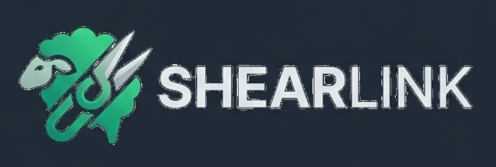

Sua IA especialista em manejo sanitário e esquila.

Olá, produtor! Sou o consultor da Shearlink. Tenho na minha base os dados sanitários e
artigos da Pampatec. Como posso te auxiliar com a esquila e manejo do seu rebanho hoje?
A IA consulta automaticamente a base de dados de artigos e dados climáticos.